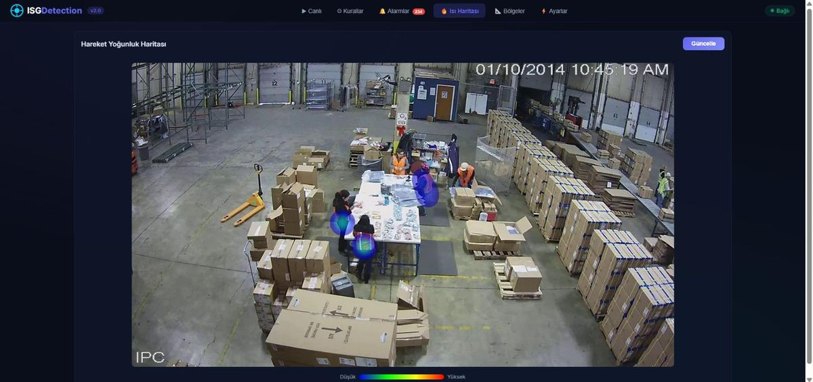

Şubat 2026'da AgentCon İstanbul'da anlattığım sistemin yazılı hali. Başlangıç noktası basit bir gözlem: her fabrikada onlarca kamera var ve hepsi sadece kayıt tutuyor. Biri düştüğünde görüntü ertesi gün izleniyor. Kameralar zaten oradaysa, neden o anda haber vermesinler?
Neden "ajan"?
Bir düşme tespit modeli tek başına bir ürün değildir. Düşme tespit edildi; sonra? Kim haber alacak, hangi kanaldan, kaç saniye içinde? Aynı kişi beş dakikadır yerde mi yatıyor, yoksa eğilip bir şey mi alıyor? Bugün üçüncü kez aynı köşede "bölge ihlali" veriliyorsa bu bir alışkanlık mı, bir tasarım hatası mı? Bu soruların cevabı algı modelinde değil, üstündeki katmandadır. O katmana ajan diyoruz: olayları bağlama oturtan, kural uygulayan, karar veren ve raporlayan yazılım.
Mimari
- Kameralar. Mevcut IP kameralar, RTSP akışı. Yeni kamera yok; olsa da eski kameraların çözünürlüğü ve açısı çoğu zaman yeter. Yetmediği yerde önce kamerayı çevirir, sonra değiştirirsiniz.
- Uç işlem. Tesiste bir uç cihaz (bizde Nvidia Jetson) akışları alır; görüntü tesisten çıkmaz. Bulut yalnızca olayları ve özetleri görür.
- Algı. Kişi tespiti, çok nesne takibi (her kişiye bir kimlik, yüz değil) ve iskelet çıkarımı. İskelet, yüz tanımadan çok daha az veriyle çok daha fazla şey söyler: duruş, açı, hız.
- Olay motoru. Kurallar: gövde açısı eşiği aşıp yarım saniyeden uzun sürerse düşme; kalça sanal alanın içindeyse bölge ihlali; kötü duruş belirli süreyi geçerse ergonomi uyarısı. Tek kare karar vermez; süre ve hız karar verir.
- Ajan katmanı. LLM tabanlı bir orkestrasyon: olayları alır, bağlamı toplar (hangi kamera, hangi vardiya, kaçıncı tekrar), kime ve nasıl bildirileceğine karar verir, olay kaydını açar, vardiya sonunda raporu yazar. Aynı katman tekrar eden yanlış alarmları gruplar ve "bu köşe hep alarm veriyor, sanal alan yanlış çizilmiş olabilir" der.
- Panel. Web tabanlı; anlık durum, olay listesi, kamera görüntüsü, rapor arşivi.
Düşme tespiti nasıl çalışır
Omuz orta noktası ile kalça orta noktası arasındaki çizginin dikeyle yaptığı açıya bakıyoruz. Ayakta duran kişide bu açı sıfıra yakındır; eğilende artar; yerde yatanda doksana yaklaşır. Açı tek başına yetmez: eğilip kutu alan da bir an için büyük açı verir. Bu yüzden iki şey daha: açının ne kadar hızla değiştiği (düşme hızlıdır, eğilme yavaş) ve ne kadar sürdüğü. Eşik aşılıp yarım saniyeden uzun sürerse olay açılır.
Bu hesabın altında bir de takip katmanı var: kim, hangi kimlikle, kaç karedir görünüyor. Playground'daki takip simülasyonu, gürültülü tespitlerden kimlik üretmenin neden ayrı bir iş olduğunu gösterir. Gerçek sistemde bunun üstüne çoklu kamera ve ajan katmanı gelir.
Gizlilik, baştan
- Yüz tanıma yok. Kişiler takip kimliğiyle izlenir, isimle değil.
- Görüntü tesisten çıkmaz; uç cihazda işlenir. Buluta olay ve özet gider.
- Kayıt yalnızca olay anında ve olayın etrafındaki birkaç saniye için tutulur.
- Çalışanlar sistemi bilir; panel İSG ekibinin elindedir, yönetimin gözetleme aracı değildir.
Bunlar etik tercihler olduğu kadar pratik tercihlerdir: gözetleme aracı gibi kurulan sistemi çalışanlar sabote eder, güvenlik aracı gibi kurulanı sahiplenir.
Alpplas'tan Elanus'a
Bu sistemin kökü, Alpplas'ta kurduğum çok kameralı personel ve aktivite takibinde. Orada image alignment ile geniş alanı tek koordinat sistemine oturtmuş, LSTM ile hareket akışından cycle time hesaplamış, pose estimation ile düşme ve kötü duruş tespit etmiştik. Elanus'ta bunu ürüne çevirirken iki şey ekledik: mevcut CCTV ile çalışma zorunluluğu (yeni kamera satmıyoruz) ve ajan katmanı (alarm üretmek yetmez, alarmı yönetmek gerekir).
Kısacası: kamera zaten var, model artık ucuz; değer, olayı bağlama oturtan ve doğru kişiye doğru zamanda haber veren katmanda. Sorularınız varsa yazın; benzer bir tesis için neyin gerekip neyin gerekmediğini yarım saatte konuşabiliriz.
The written version of the system I presented at AgentCon Istanbul in February 2026. It starts from a simple observation: every factory has dozens of cameras and all of them only record. When someone falls, the footage is watched the next day. If the cameras are already there, why don't they speak up at that moment?
Why "agent"?
A fall-detection model is not a product on its own. A fall was detected; then what? Who gets notified, through which channel, within how many seconds? Has the same person been lying there for five minutes, or did they bend down to pick something up? If the same corner has raised "zone violation" three times today, is that a habit or a design mistake? The answers to these questions don't live in the perception model; they live in the layer above it. We call that layer the agent: software that puts events in context, applies rules, decides and reports.
Architecture
- Cameras. Existing IP cameras, RTSP streams. No new cameras; even old ones usually have enough resolution and angle. Where they don't, you turn the camera first and replace it second.
- Edge processing. An edge device on site (an Nvidia Jetson in our case) takes the streams; video never leaves the facility. The cloud only sees events and summaries.
- Perception. Person detection, multi-object tracking (an ID per person, not a face) and skeleton extraction. A skeleton says far more with far less data than face recognition: posture, angle, speed.
- Event engine. Rules: fall when the torso angle exceeds the threshold for longer than half a second; zone violation when the hips are inside a virtual area; ergonomics warning when bad posture lasts beyond a limit. A single frame never decides; duration and speed decide.
- Agent layer. LLM-based orchestration: it takes events, gathers context (which camera, which shift, which repetition), decides who to notify and how, opens the incident record, and writes the shift report at the end. The same layer groups repeated false alarms and says "this corner keeps alarming, the virtual zone may be drawn wrong".
- Dashboard. Web-based; live status, event list, camera view, report archive.
How fall detection works
We look at the angle between vertical and the line from the shoulder midpoint to the hip midpoint. On a standing person it's near zero; bending increases it; lying on the floor approaches ninety. The angle alone isn't enough: someone bending to lift a box also gives a large angle for a moment. So two more things: how fast the angle changed (falls are fast, bending is slow) and how long it lasted. If the threshold is exceeded for longer than half a second, an event opens.
Underneath this computation sits a tracking layer: who, with which identity, visible for how many frames. The tracking simulation in the playground shows why producing identities from noisy detections is a job of its own. The real system adds multiple cameras and the agent layer on top.
Privacy, from the start
- No face recognition. People are followed by a tracking ID, not by name.
- Video never leaves the site; it's processed on the edge device. Events and summaries go to the cloud.
- Recording is kept only at the moment of an event and for a few seconds around it.
- Workers know about the system; the dashboard belongs to the safety team, not to management as a surveillance tool.
These are practical choices as much as ethical ones: a system installed like a surveillance tool gets sabotaged by workers; one installed like a safety tool gets adopted by them.
From Alpplas to Elanus
This system's roots are in the multi-camera personnel and activity tracking I built at Alpplas. There we had brought a wide area into one coordinate system with image alignment, computed cycle time from motion flow with an LSTM, and detected falls and bad posture with pose estimation. Turning that into a product at Elanus, we added two things: the obligation to work with existing CCTV (we don't sell cameras) and the agent layer (raising an alarm isn't enough, alarms need managing).
In short: the cameras are already there and models are cheap now; the value is in the layer that puts an event in context and tells the right person at the right time. If you have questions, write to me; for a similar facility we can work out in half an hour what's needed and what isn't.